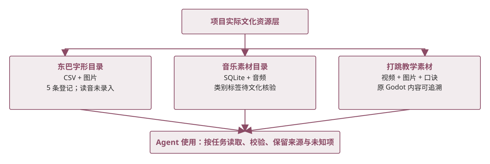

（二）数据收集与处理文化知识库：先看实际有什么
现有资源分散在字形、音乐与舞蹈目录中，Agent 按任务读取。这里展示实际文件与数据库，不把尚未落地的 RAG 或专家审核写成已建成能力。

证据与状态 字形 5 条已登记；读音、逐条授权和完整书目未齐。音乐录音标签需进一步文化核验。
现有资源分散在字形、音乐与舞蹈目录中，Agent 按任务读取。这里展示实际文件与数据库，不把尚未落地的 RAG 或专家审核写成已建成能力。

证据与状态 字形 5 条已登记；读音、逐条授权和完整书目未齐。音乐录音标签需进一步文化核验。